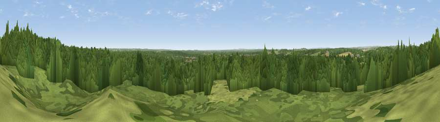

Viewpoint near Verwood
#36913 in England · top 54% of its area beats it · near VerwoodWhere it is
The exact computed spot (SU 09075 09725). Click the marker for map links.
The view, rendered

A 360° render of this exact spot computed from the terrain model, tree cover and land cover — summer colours, afternoon light, calibrated against photographs of famous viewpoints. Real trees, hedges and buildings will differ in detail.
The panorama
Grey silhouette: terrain skyline in each direction (720 bearings, Earth curvature and refraction included). Dashed green: skyline with trees (+15 m) and buildings (+8 m) as obstacles. Blue strip: how far the ground is visible on each bearing.
Where the view opens
Wedge length = distance to the farthest visible ground on that bearing (vegetation-aware). Rings at 10, 25 and 50 km.
What fills the view
71% woodland · 22% grassland · 5% built-up · 2% cropland
Angular shares of the visible panorama (visual magnitude), not map area. Landscape diversity 0.36 (0–1 Shannon).
Key numbers
More beautiful places nearby
The staircase of upgrades: each row has a higher view potential than everything closer. Driving times are estimates from straight-line distance, calibrated against real road routing — check an actual route before setting out.
| Place | Direction | Drive | Score |
|---|---|---|---|
| Viewpoint near Cranborne | NW · 4 km | ~10 min | 37.6 |
| Viewpoint near Cranborne | NW · 5 km | ~11 min | 38.2 |
| Viewpoint near Cranborne | NW · 6 km | ~12 min | 40.4 |
| Viewpoint near Cranborne | NW · 7 km | ~14 min | 44.6 |
| Viewpoint near Martin | NNW · 9 km | ~17 min | 45.5 |
| Viewpoint near Cranborne | NW · 9 km | ~17 min | 65.0 |
| Trow Down | NW · 17 km | ~30 min | 67.5 |
| Monk's Down | NW · 19 km | ~33 min | 74.4 |
50.88694, -1.87236 · source: screening · position refined by local search. Computed location — check access rights before visiting.